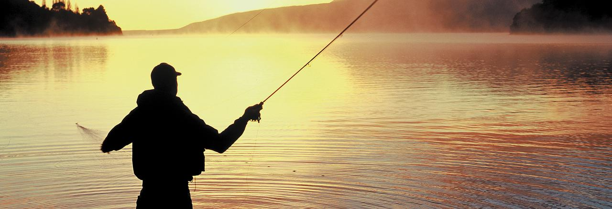
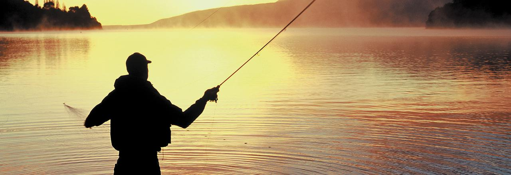

Yash Gupta: I have known him for 4 years now and we both like to play tennis as we both play together. He is very good at computer programming and he is the one who got me into computer programming. He is also very good at playing this game called overwatch on the computer. He also playes an indian instrument called the Tabla which is kind of like the bongos but takes a very long time to master. He goes to the school right next to us which is PTMS. He is an 8th grader right now and might come to CCA.
Yadav Shrivas: He is a 9th grader going to CCA. I have known him since 7th grade when I was playing tennis with him. He is the best tennis player I have ever met(besides my coach). He is a very good singer as I have played the Tabla while he sang. He is a chill guy and funny when you hang otu with him. He has the best dog named biscutt who is the craziest dog that I have every seen.
Manav Khanvillker: He is a 7th grader at CVMS right now. I have known him since I moved to San Diego and has been my first best friend. He is like Yash and also plays tennis. He players an instrment as well. It is the piano which he has been playing for 3 years now. He also is very smart in enginerring as he makes different creations every day.
 Dylan Feldstien: I met him in 8th grade and right now he is a 9th grader who goes to CCA. He is also, a very good tennis plyer. He playes many tounaments as he is ranked very high in the state and city. He is also very nice and he is really good at spanish. He likes to talk about basketball a lot with another one of my friends on this list named Danny. Dylan's favorite team in basketball is the Cleveland Cavileirs and his favorite player is Lebron James. He is also a litle bit interested in football and likes the cleveland browns.
Adi Gudi: He is a 9th grader going to CCA. I have known him since 7th grade when I met him at CVMS. He is very smart and never fails a test or class. He is a very good basketball player and knows a lot about the sports as well. He alwyas is nice to anyone he meets and you could never get mad at him either. He also lieks to play video games sometimes. He is also very good with is football knowlege just like me. He has joined my fantasy football league and is doing very good right now in it.
Danny AppleBaum: He is a 9th grader in CCA.I met in 8th grade last year in math class. He is a nice person who nobody can get mad at. He is very knowlegable in sports such as basketball, football, and baseball. I don't know how he knows so much but its alwas a good consversation starter. He doesn't play any sports but is very good at spanish and math. He never hets mad at anyone and thats why he is a very good friend.
Tim Park: I have knwon him since 6th grade and right now he is a 9th grader that goes to westview highschool. He has a very good personallity and he really likes to fish because he goes 6-7 times a week. He also, was always a good guy and really nice. We met by playing something at recess and it happened that we would be friends. He is not very sportity. Meaning he doesnt play ant sports but is knowlegable about basketball.

Aayush : He is a 9th grader in CCA. I met him when I used to do Aikido at the boys and girls club of San Diego at the Carmel Valley branch. He used to be a really good tennis player but quit and now does swimming and is good at that now. He is on a swim team and does swimming as a competitive sport. He is nice most of the time but does get annoying sometimes . He is also a fast runner and can out run anyone.
Ryan : He is a 9th grader that goes to CCA. I met him when i used to do Aikido and when I was at CVMS. He likes basketball and is still good at aikido. He is a nice person most of the time. He likes to hang out with Aayush a lot and likes to play 2K17 because he likes basketball.
Dylan Feldstien: I met him in 8th grade and right now he is a 9th grader who goes to CCA. He is also, a very good tennis plyer. He playes many tounaments as he is ranked very high in the state and city. He is also very nice and he is really good at spanish. He likes to talk about basketball a lot with another one of my friends on this list named Danny. Dylan's favorite team in basketball is the Cleveland Cavileirs and his favorite player is Lebron James. He is also a litle bit interested in football and likes the cleveland browns.
Adi Gudi: He is a 9th grader going to CCA. I have known him since 7th grade when I met him at CVMS. He is very smart and never fails a test or class. He is a very good basketball player and knows a lot about the sports as well. He alwyas is nice to anyone he meets and you could never get mad at him either. He also lieks to play video games sometimes. He is also very good with is football knowlege just like me. He has joined my fantasy football league and is doing very good right now in it.
Danny AppleBaum: He is a 9th grader in CCA.I met in 8th grade last year in math class. He is a nice person who nobody can get mad at. He is very knowlegable in sports such as basketball, football, and baseball. I don't know how he knows so much but its alwas a good consversation starter. He doesn't play any sports but is very good at spanish and math. He never hets mad at anyone and thats why he is a very good friend.
Tim Park: I have knwon him since 6th grade and right now he is a 9th grader that goes to westview highschool. He has a very good personallity and he really likes to fish because he goes 6-7 times a week. He also, was always a good guy and really nice. We met by playing something at recess and it happened that we would be friends. He is not very sportity. Meaning he doesnt play ant sports but is knowlegable about basketball.

Aayush : He is a 9th grader in CCA. I met him when I used to do Aikido at the boys and girls club of San Diego at the Carmel Valley branch. He used to be a really good tennis player but quit and now does swimming and is good at that now. He is on a swim team and does swimming as a competitive sport. He is nice most of the time but does get annoying sometimes . He is also a fast runner and can out run anyone.
Ryan : He is a 9th grader that goes to CCA. I met him when i used to do Aikido and when I was at CVMS. He likes basketball and is still good at aikido. He is a nice person most of the time. He likes to hang out with Aayush a lot and likes to play 2K17 because he likes basketball.